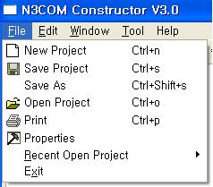

파일 메뉴
(그림 2.3-1)은 공통 풀다운 메뉴의 파일 메뉴이다. 파일 메뉴는 [새 프로젝트], [프로젝트 열기], [프로젝트 닫기], [프로젝트 저장], [프린트], [프로그램 종료]의 메뉴 항목으로 구성된다. 각 메뉴 항목의 기능은 다음과 같다.

그림 2.1-2 파일 메뉴
- 새 프로젝트 : 도구에서 새로운 프로젝트를 생성한다.
- 프로젝트 저장 : 작업중인 프로젝트를 저장한다.
- 다른이름으로 프로젝트 저장 : 작업중인 프로젝트를 다른 이름으로 저장한다.
- 프로젝트 열기 : 파일에 저장된 프로젝트를 도구로 읽어 들인다.
- 프린트 : 사용자가 선택한 정보를 프린터로 출력한다.
- Preferences : 소스 코드를 넣어준다.
- 프로젝트 다시 열기 : 최근 작업한 파일 n개의 리스트를 보여준다.
- 프로그램 종료 : 프로그램을 종료하고 시스템으로 빠져나간다.